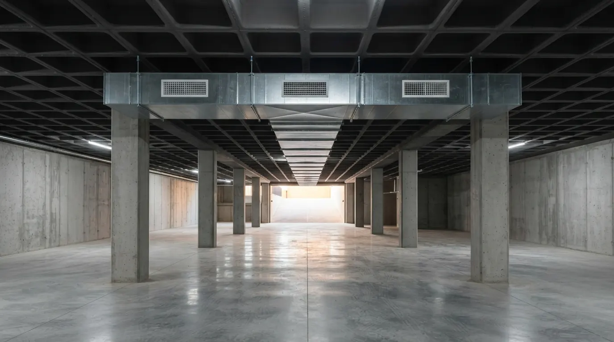
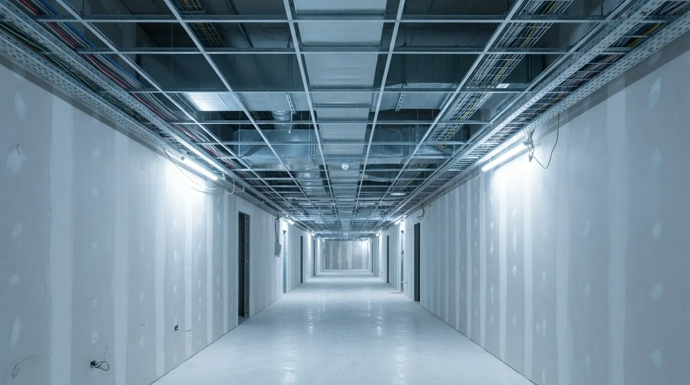
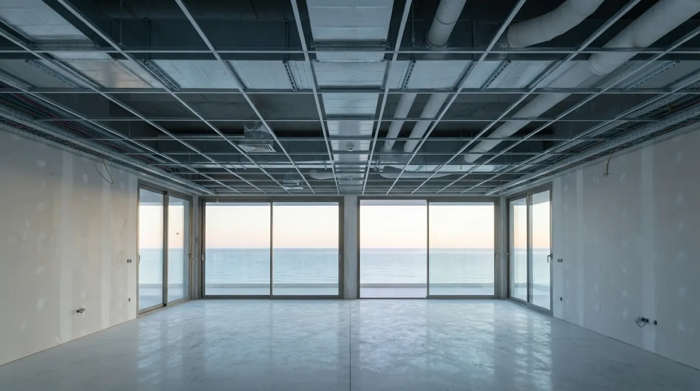
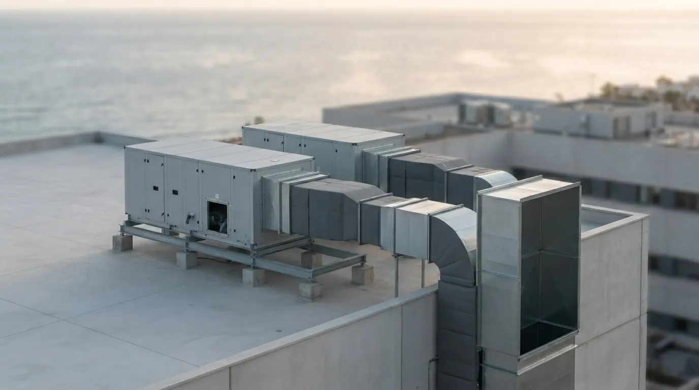
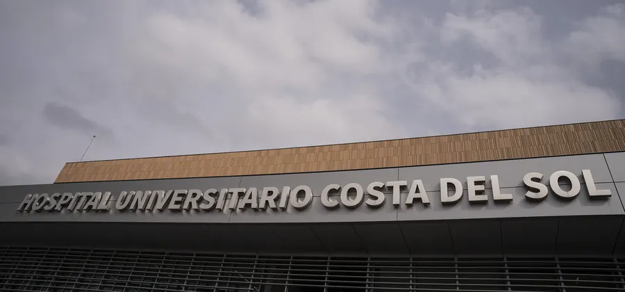

Montaje de conductos para grandes obras.
Climatización y ventilación de hospitales, hoteles, viviendas de lujo y garajes en la Costa del Sol y Córdoba. Fabricamos la red en obra, la montamos y dejamos las máquinas en marcha.
- Obras
- Tyrian ResidencesEstepona (Málaga)
- Hospital Universitario Costa del SolMarbella (Málaga)
- Hoteles Los MonterosMarbella (Málaga)
- Materno-infantil del Hospital Reina SofíaCórdoba
Somos montadores de conductos. Llegamos a la obra con cuadrilla propia, la red fabricada a medida y la documentación en regla. Desde el primer forjado o para terminar la red que otro dejó a medias.
- Cuadrilla
- 11 montadores propios en obra
- Capacidad
- 2 o 3 obras grandes a la vez
- Radio
- Hasta 4 horas desde Córdoba, con equipo fijo en la Costa del Sol
- Especialidad
- Ventilación de garajes y parkings
- Clientes
- Constructoras e instaladoras
Qué montamos.
De la cubierta al sótano: la red de climatización y ventilación completa, en el material que pide el proyecto.
Sectores.
Edificios donde la red de aire no admite improvisación: plazos cerrados, techos llenos de instalaciones y acabados exigentes.

Hospitales
Hospital Costa del Sol y materno-infantil del Reina Sofía.

Hoteles
Climatización y ventilación hotelera en Marbella.

Residencial
Viviendas de lujo y promociones con garaje: 373 viviendas.

Comercial
Centros comerciales y grandes superficies.
Obras.
Hospitales, hoteles y residencial de lujo en la Costa del Sol y en Córdoba.
Tyrian Residences
Estepona (Málaga) · Toda la ventilación y la climatización de las viviendas y del parking.

TerminadaHospital Universitario Costa del Sol
Marbella (Málaga) · Ampliación del hospital
Cómo trabajamos con la constructora.
Planos y oferta
Estudiamos los planos de climatización y ventilación y presentamos la oferta de montaje.
Replanteo y fabricación
Replanteamos con la obra y fabricamos fibra y chapa a medida, en el propio edificio cuando conviene.
Montaje por fases
Soportes, tramos, piezas especiales, rejillas y difusores, coordinados con el resto de instalaciones del techo.
Puesta en marcha
Conexión de UTAs, puesta en marcha y equilibrado de caudales con la instaladora.
Entramos en obras con la red a medias o con retraso: revisamos lo montado, corregimos lo necesario y terminamos.
Documentación para entrar en obra.
La enviamos con la oferta, antes de la primera visita.
Solicitar documentación- Formación en plataformas elevadoras (PEMP)Todo el personal de obraAl día
- Formación en trabajos en alturaCon arnés y equipos propiosAl día
- Prevención de riesgos laboralesFormación del sector por trabajadorA confirmar
- REA · Registro de Empresas AcreditadasPara subcontratar en construcciónA confirmar
- Seguro de responsabilidad civilPóliza e importeA confirmar
- Empresa instaladora (RITE)Instalaciones térmicas en edificiosA confirmar
Envíenos los planos de su obra.
Con los planos de climatización y ventilación, el tipo de edificio y la fecha de entrada preparamos la oferta de montaje.